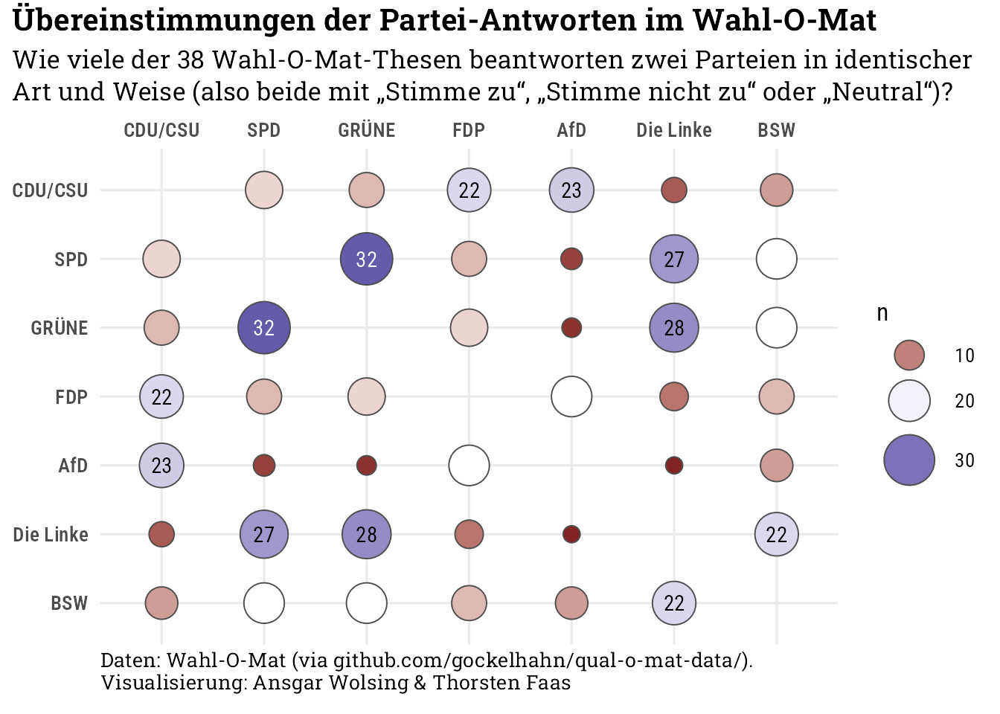

Code
library(tidyverse)
library(ggtext)
library(jsonlite)
library(here)
knitr::opts_chunk$set(dev = "ragg_png")
source(here("R", "custom-theme.R"))
theme_set(theme_custom())library(tidyverse)
library(ggtext)
library(jsonlite)
library(here)
knitr::opts_chunk$set(dev = "ragg_png")
source(here("R", "custom-theme.R"))
theme_set(theme_custom())Daten des Wahlomats für die Bundestagswahlen: https://github.com/gockelhahn/qual-o-mat-data/
Wahlomat-Daten sind Ordnern für das Jahr (ab 2002) und darin für die jeweilige Wahl (“bundestagswahl” oder der Name des Bundeslands).
pull_wahlomat_data <- function(year, region = "deutschland") {
gh_base_url <- "https://raw.githubusercontent.com/gockelhahn/qual-o-mat-data/refs/heads/master/data/"
gh_tables <- c("answer", "opinion", "overview", "party", "statement", "comment")
# Keine Statements der Parteien bei der BTW 2002
if (year == 2002) {
gh_tables <- gh_tables[1:5]
}
gh_filenames <- paste0(gh_tables, ".json")
gh_urls <- paste(gh_base_url, year, region, gh_filenames, sep = "/")
data <- map(gh_urls, read_json)
data <- set_names(data, gh_tables)
dfs <- map(data, bind_rows)
dfs
}
prepare_wahlomat_data <- function(x, with_comments = TRUE) {
df <- x[["statement"]] |>
inner_join(
x[["opinion"]], by = join_by(id == statement),
suffix = c(".statement", ".opinion")) |>
inner_join(
x[["answer"]], by = join_by(answer == id)) |>
inner_join(
x[["party"]], by = join_by(party == id),
suffix = c(".statement", ".party"))
if (with_comments) {
df <- df |>
inner_join(
x[["comment"]], by = join_by(comment == id),
suffix = c(".statement", ".comment"))
}
df <- df |>
select(-c(answer)) |>
rename(
id.statement = id,
id.party = party,
party = name,
answer.message = message
) |>
mutate(
answer.message = factor(answer.message,
levels = c("Stimme zu", "Neutral", "Stimme nicht zu"))
)
if (with_comments) {
df <- df |>
mutate(
text.comment = str_remove(text.comment, "^\""),
text.comment = str_remove(text.comment, "\"$")
)
}
df
}
dfs <- pull_wahlomat_data(2025)
df <- prepare_wahlomat_data(dfs)
btw_years <- c(2002, 2005, 2009, 2013, 2017, 2021, 2025)
dfs_all_btw <- map(
btw_years, function(x) {
dfs <- pull_wahlomat_data(x)
with_comments = x != 2002
df <- prepare_wahlomat_data(dfs, with_comments = with_comments)
}
)
dfs_all_btw <- set_names(dfs_all_btw, btw_years)
write_rds(dfs_all_btw, here("03-wahlomat", "wahlomat-all-btw.rds"))df |>
select(party, text.comment) |>
mutate(text.comment.length = str_length(text.comment)) |>
count(party, wt = text.comment.length, sort = TRUE)# A tibble: 28 × 2
party n
<chr> <int>
1 Verjüngungsforschung 18278
2 MERA25 16871
3 FDP 16465
4 SPD 15876
5 dieBasis 15628
6 ÖDP 15544
7 GRÜNE 15237
8 PdH 15189
9 MENSCHLICHE WELT 15182
10 AfD 14917
# ℹ 18 more rowsdf |>
count(party, answer.message) |>
filter(answer.message == "Neutral") |>
arrange(-n)# A tibble: 25 × 3
party answer.message n
<chr> <fct> <int>
1 Verjüngungsforschung Neutral 38
2 dieBasis Neutral 11
3 BSW Neutral 8
4 PdH Neutral 8
5 MENSCHLICHE WELT Neutral 6
6 AfD Neutral 5
7 BP Neutral 4
8 Bündnis C Neutral 4
9 FDP Neutral 4
10 MLPD Neutral 4
# ℹ 15 more rowslibrary(widyr)
# selected_parties <- c("CDU/CSU", "SPD", "AfD", "GRÜNE", "FDP", "DIE LINKE", "FREIE WÄHLER",
# "Tierschutzpartei", "dieBasis", "Die PARTEI")
# selected_parties <- c("CDU/CSU", "SPD", "AfD", "GRÜNE", "FDP", "DIE LINKE", "FREIE WÄHLER")
selected_parties <- c("CDU/CSU", "SPD", "GRÜNE", "FDP", "AfD", "Die Linke", "BSW")
df_party_connections <- df |>
select(id.statement, party, answer.message) |>
mutate(party = ifelse(party == "CDU / CSU", "CDU/CSU", party)) |>
filter(party %in% selected_parties) |>
# Neutrale Positionen entfernen (TODO: tbd)
# filter(answer.message != "Neutral") |>
mutate(statement_answer = paste(id.statement, answer.message, sep = "#")) |>
pairwise_count(party, statement_answer, diag = TRUE, upper = TRUE) |>
arrange(-n) |>
mutate(
item1 = factor(item1, levels = selected_parties),
item2 = factor(item2, levels = rev(selected_parties))
) |>
filter(item1 != item2)
df_party_connections |>
ggplot(aes(item1, item2)) +
geom_point(
aes(size = n, fill = n),
shape = 21, color = "grey30") +
geom_text(
data = ~filter(., n > 19),
aes(label = n, color = ifelse(n >= 30, "white", "black")),
family = "Roboto Condensed"
) +
scale_x_discrete(position = "top") +
scale_y_discrete() +
scale_size_area(max_size = 12) +
scale_fill_gradient2(midpoint = 19) +
scale_color_identity() +
guides(
size = guide_legend(order = 1), fill = guide_legend(order = 1)
) +
labs(
title = "Übereinstimmungen der Partei-Antworten im Wahl-O-Mat",
subtitle = "Wie viele der 38 Wahl-O-Mat-Thesen beantworten zwei Parteien in identischer Art und Weise (also beide mit „Stimme zu“, „Stimme nicht zu“ oder „Neutral“)?",
caption = "Daten: Wahl-O-Mat (via github.com/gockelhahn/qual-o-mat-data/). Visualisierung: Ansgar Wolsing & Thorsten Faas"
) +
theme(
axis.title = element_blank(),
axis.text = element_text(family = "Roboto Condensed SemiBold"))
Alle verfügbaren Bundestagswahlen
# Anzahl Wahlomat-Statements
df_number_of_statements_per_year <- dfs_all_btw |>
bind_rows(.id = "year") |>
distinct(year, id.statement) |>
count(year, name = "n_statements_per_year")
df_all_btw_party_connections <- dfs_all_btw |>
bind_rows(.id = "year") |>
select(year, id.statement, party, answer.message) |>
mutate(party = case_match(
party,
"CDU / CSU" ~ "CDU/CSU",
"BÜNDNIS 90/DIE GRÜNEN" ~ "GRÜNE",
"Bündnis 90/ Die Grünen" ~ "GRÜNE",
"DIE LINKE.PDS" ~ "Die Linke",
"DIE LINKE" ~ "Die Linke",
"PDS" ~ "DIE LINKE",
.default = party)) |>
filter(party %in% selected_parties) |>
mutate(statement_answer = paste(year, id.statement, answer.message, sep = "#")) |>
group_by(year) |>
pairwise_count(party, statement_answer, diag = FALSE, upper = TRUE) |>
mutate(
item1 = factor(item1, levels = selected_parties),
item2 = factor(item2, levels = selected_parties)
) |>
inner_join(df_number_of_statements_per_year, by = join_by(year)) |>
mutate(share = n / n_statements_per_year) |>
select(-n_statements_per_year)df_party_connections_2021_2025 <- df_all_btw_party_connections |>
filter(year %in% c(2021, 2025),
item1 %in% selected_parties,
item2 %in% selected_parties) |>
mutate(
item1_num = as.numeric(item1),
item2_num = as.numeric(item2)
) |>
# Für 2021 die obere Hälfte, für 2025 die untere Hälfte der Matrix auswählen
filter(
year == 2025 & as.numeric(item1) < as.numeric(item2) |
year == 2021 & as.numeric(item1) > as.numeric(item2)
) |>
mutate(
item2 = fct_rev(item2)
) |>
arrange(year, item1, item2) df_party_connections_2021_2025 |>
ggplot(aes(item1, item2)) +
# Jahreszahlen
annotate(
"text",
x = c(3.5, 0.5),
y = c(6.5, 1.5),
label = c("2021", "2025"),
family = "Roboto Condensed", fontface = "bold", size = 30, color = "grey84", hjust = 0
) +
geom_point(
aes(size = n, fill = n),
shape = 21, color = "grey30") +
geom_text(
data = ~filter(., n > 19),
aes(label = n, color = ifelse(n >= 30, "white", "black")),
family = "Roboto Condensed"
) +
geom_abline(
aes(intercept = 8, slope = -1),
color = "grey50", linewidth = 0.4, linetype = "dashed") +
scale_x_discrete(position = "top") +
scale_y_discrete() +
scale_size_area(max_size = 12) +
scale_fill_gradient2(midpoint = 19) +
scale_color_identity() +
coord_cartesian(clip = "off") +
guides(
size = guide_legend(order = 1), fill = guide_legend(order = 1)
) +
labs(
title = "Übereinstimmungen der Partei-Antworten im Wahl-O-Mat",
subtitle = "Wie viele der 38 Wahl-O-Mat-Thesen beantworten zwei Parteien in identischer Art und Weise (also beide mit „Stimme zu“, „Stimme nicht zu“ oder „Neutral“)?",
caption = "Daten: Wahl-O-Mat (via github.com/gockelhahn/qual-o-mat-data/). Visualisierung: Ansgar Wolsing & Thorsten Faas",
size = "Anzahl Übereinstimmungen", fill = "Anzahl Übereinstimmungen"
) +
theme(
axis.title = element_blank(),
axis.text = element_text(family = "Roboto Condensed SemiBold"),
plot.subtitle = element_textbox(margin = margin(b = 10)),
legend.position = "bottom")df_party_connections_2021_2025 |>
ggplot(aes(item1, item2)) +
# Jahreszahlen
annotate(
"text",
x = c(6.5, 0.5),
y = c(7.5, 0.5),
vjust = c(1, 0),
label = c("2\n0\n2\n1", "2\n0\n2\n5"),
family = "Roboto Condensed", fontface = "bold", size = 8, color = "grey84",
hjust = 0, lineheight = 0.8
) +
geom_point(
aes(size = n, fill = n),
shape = 21, color = "grey30") +
geom_text(
data = ~filter(., n > 19),
aes(label = n, color = ifelse(n >= 30, "white", "black")),
family = "Roboto Condensed"
) +
geom_abline(
aes(intercept = 8, slope = -1),
color = "grey50", linewidth = 0.4, linetype = "dashed") +
scale_x_discrete(position = "top") +
scale_y_discrete() +
scale_size_area(max_size = 12) +
scale_fill_gradient2(midpoint = 19) +
scale_color_identity() +
coord_cartesian(clip = "off") +
guides(
size = guide_legend(order = 1), fill = guide_legend(order = 1)
) +
labs(
title = "Übereinstimmungen der Partei-Antworten im Wahl-O-Mat",
subtitle = "Wie viele der 38 Wahl-O-Mat-Thesen beantworten zwei Parteien in identischer Art und Weise (also beide mit „Stimme zu“, „Stimme nicht zu“ oder „Neutral“)?",
caption = "Daten: Wahl-O-Mat (via github.com/gockelhahn/qual-o-mat-data/). Visualisierung: Ansgar Wolsing & Thorsten Faas",
size = "Anzahl Übereinstimmungen", fill = "Anzahl Übereinstimmungen"
) +
theme(
axis.title = element_blank(),
axis.text = element_text(family = "Roboto Condensed SemiBold"),
plot.subtitle = element_textbox(margin = margin(b = 10)),
legend.position = "bottom")df_party_connections_2021_2025 |>
ggplot(aes(item1, item2)) +
# Jahreszahlen
annotate(
"text",
x = c(5.5, 0.5),
y = c(2.9, 7.1),
vjust = c(1, 0),
label = c("\U25B3 2021", "2025 \U25BD"),
family = "Roboto Condensed", fontface = "bold", size = 5, color = "grey70",
hjust = 0, lineheight = 0.8, angle = 324
) +
geom_point(
aes(size = n, fill = n),
shape = 21, color = "grey30") +
geom_text(
data = ~filter(., n > 19),
aes(label = n, color = ifelse(n >= 30, "white", "black")),
family = "Roboto Condensed"
) +
geom_abline(
aes(intercept = 8, slope = -1),
color = "grey50", linewidth = 0.4, linetype = "dashed") +
scale_x_discrete(position = "top") +
scale_y_discrete() +
scale_size_area(max_size = 12) +
scale_fill_gradient2(midpoint = 19) +
scale_color_identity() +
coord_cartesian(clip = "off") +
guides(
size = guide_legend(order = 1), fill = guide_legend(order = 1)
) +
labs(
title = "Übereinstimmungen der Partei-Antworten im Wahl-O-Mat",
subtitle = "Wie viele der 38 Wahl-O-Mat-Thesen beantworten zwei Parteien in identischer Art und Weise (also beide mit „Stimme zu“, „Stimme nicht zu“ oder „Neutral“)?",
caption = "Daten: Wahl-O-Mat (via github.com/gockelhahn/qual-o-mat-data/). Visualisierung: Ansgar Wolsing & Thorsten Faas",
size = "Anzahl Übereinstimmungen", fill = "Anzahl Übereinstimmungen"
) +
theme(
axis.title = element_blank(),
axis.text = element_text(family = "Roboto Condensed SemiBold"),
plot.subtitle = element_textbox(margin = margin(b = 10)),
legend.position = "bottom")df_all_btw_party_connections |>
filter(year %in% c(2021, 2025),
item1 %in% selected_parties,
item2 %in% selected_parties) |>
filter(as.numeric(item1) < as.numeric(item2)) |>
filter(item1 != "BSW", item2 != "BSW") |>
mutate(
across(c(item1, item2), function(x) str_remove(x, "Die ")),
connection_label = paste(item1, item2, sep = "-"),
connection_label_year = ifelse(year == 2021,
paste(year, connection_label, sep = " | "),
paste(connection_label, year, sep = " | "))) |>
ggplot(aes(year, n, group = connection_label)) +
geom_line() +
geom_text(
aes(label = connection_label, hjust = ifelse(year == 2021, 1, 0)))df_all_btw_party_connections |>
mutate(
year = as.integer(year),
connection = paste(item1, item2, sep = " & ")) |>
filter(connection == "SPD & GRÜNE") |>
ggplot(aes(year, share)) +
geom_line() +
geom_point(shape = 21, size = 2, fill = "white") +
scale_y_continuous(labels = scales::label_percent()) +
coord_cartesian(ylim = c(0, 1))df_all_btw_party_connections |>
mutate(
year = as.integer(year),
connection = paste(item1, item2, sep = " & ")) |>
filter(connection == "CDU/CSU & FDP") |>
ggplot(aes(year, share)) +
geom_line() +
geom_point(shape = 21, size = 2, fill = "white") +
scale_y_continuous(labels = scales::label_percent()) +
coord_cartesian(ylim = c(0, 1))Mehrere Konstellationen in einem Chart mit Facets:
selected_connections <- c(
"CDU/CSU & FDP",
"SPD & GRÜNE",
"CDU/CSU & SPD",
"SPD & FDP",
"GRÜNE & FDP"
)
df_all_btw_party_connections |>
mutate(connection = paste(item1, item2, sep = " & ")) |>
filter(connection %in% selected_connections) |>
ggplot(aes(year, share, group = connection)) +
geom_line() +
geom_point(shape = 21, size = 2, fill = "white") +
scale_y_continuous(labels = scales::label_percent()) +
coord_cartesian(ylim = c(0, 1)) +
facet_wrap(vars(connection))Bei welchen Thesen gibt es die meisten Übereinstimmungen?
df_thesen_uebereinstimmungen <- df |>
mutate(
party = case_match(
party,
"CDU / CSU" ~ "CDU/CSU",
.default = party)
) |>
filter(party %in% selected_parties) |>
count(id.statement, label, answer.message, name = "n_uebereinstimmende_parteien") |>
slice_max(order_by = n_uebereinstimmende_parteien,
n = 1, with_ties = FALSE, by = id.statement) |>
arrange(-n_uebereinstimmende_parteien)
df_thesen_uebereinstimmungen# A tibble: 38 × 4
id.statement label answer.message n_uebereinstimmende_…¹
<int> <chr> <fct> <int>
1 18 Projekte gegen Rechtsextr… Stimme zu 6
2 23 Verwerfen der Klimaziele Stimme nicht … 6
3 26 Nationale Währung Stimme nicht … 6
4 2 Streichung des Bürgergelds Stimme zu 5
5 5 Begrenzung der Mietpreise Stimme zu 5
6 8 Rente nach 40 Beitragsjah… Stimme nicht … 5
7 13 Kompetenzen in der Schulp… Stimme zu 5
8 16 Abschaffung der Frauenquo… Stimme nicht … 5
9 20 Elternabhängiges BAföG Stimme zu 5
10 32 Strafrecht für unter 14-J… Stimme nicht … 5
# ℹ 28 more rows
# ℹ abbreviated name: ¹n_uebereinstimmende_parteiendf |>
select(id.statement, label, party, answer.message) |>
inner_join(select(df_thesen_uebereinstimmungen, - answer.message), by = join_by(id.statement, label)) |>
mutate(
party = case_match(
party,
"CDU / CSU" ~ "CDU/CSU",
.default = party),
# party = factor(party, levels = selected_parties)),
label = case_match(
label,
"Grundgesetz" ~ "\"Verantwortung vor Gott\" im Grundgesetz",
"Krankenkassen" ~ "Gesetzliche Krankenkasse für alle",
"Ehrenamt" ~ "Ehrenamt auf Rente anrechnen",
"Schwangerschaftsabbruch nach Beratung" ~ "Schwangerschaftsabbruch nur nach Beratung",
.default = label
),
label = fct_reorder(label, n_uebereinstimmende_parteien)) |>
filter(party %in% selected_parties) |>
mutate(
party = ifelse(party == "Die Linke", "Linke", party),
party = factor(party, levels = c("CDU/CSU", "FDP", "AfD", "BSW", "SPD", "GRÜNE",
"Linke"))
) |>
ggplot(aes(party, label)) +
geom_tile(
aes(fill = answer.message),
color = "black", linewidth = 0.2, width = 0.91, height = 0.80
) +
scale_x_discrete(position = "top", expand = c(0, 0)) +
scale_y_discrete(position = "right") +
# scale_fill_manual(values = c(color_pal[7], "grey70", "#db30ca")) +
scale_fill_brewer(palette = "PiYG", direction = -1) +
guides(fill = guide_legend(override.aes = list(color = "black", linewidth = 0.2))) +
labs(
title = "Antworten der Parteien zu den Thesen des Wahl-O-Mat",
caption = "Daten: Wahl-O-Mat (via github.com/gockelhahn/qual-o-mat-data/).<br>
Visualisierung: Ansgar Wolsing & Thorsten Faas",
fill = NULL
) +
theme(
legend.position = "inside",
legend.position.inside = c(0, 1.085),
legend.justification = "left",
legend.direction = "horizontal",
axis.title.x.top = element_blank(),
axis.title.y = element_blank(),
axis.text.y = element_text(family = "Roboto Condensed Medium",
hjust = 0, size = 8.5),
panel.grid = element_blank(),
plot.title = element_markdown(margin = margin(b = 36)),
plot.caption = element_textbox(width = 1.5, margin = margin(t = 6, b = 12))
)